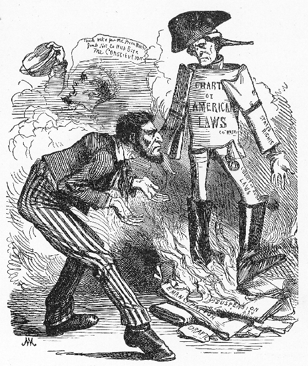
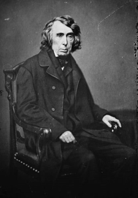

|
According to the U.S. Constitution, when any citizen is
imprisoned a court must issue a writ of habeas corpus, which
requires the government to produce the suspect in open court
and to charge him or her with a specific crime. The
Confederate Constitution had a similar clause. Intended to
prevent secret and indefinite imprisonment, habeas corpus
was suspended by both the Confederacy and the Union during
the Civil War.
In the Confederate States, the suspension of habeas
corpus was short-lived and usually ineffective. Jefferson
Davis, motivated partly by his personal commitment to having
a relatively weak central government, refused to suspend
habeas corpus without congressional approval. Violence by
Union sympathizers and a general perception that opposition
to the Confederate cause required repression led the
Confederate Congress, in early spring 1862, to give Davis
that power. Moving quickly, Davis enacted martial law,
including the right to hold suspects indefinitely without
charge, in Norfolk, Portsmouth, and Richmond. In those
cities, the suspension of habeas corpus was intended to
legitimize the existing practice of imprisoning Union
sympathizers in the "Castle Thunder" prison at Richmond, and
to free Confederate military governors to destroy local
dissent.
Because the Confederate Congress had only provided Davis
with suspension power for a limited period, the President
was lobbied repeatedly for votes to renew his authority. In
addition to Unionist sentiment, the Confederate government
pointed to local opposition as a reason why suspension was
necessary. In several states, especially North Carolina and
Georgia, governors and local judges opposed the use of
various federal powers, including conscription. Using writs
of habeas corpus, judges freed local men from the control of
military recruiters and military courts. In effect, habeas
corpus served as a way for state judicial authority to
override military power. Although the Confederate Congress
enacted legislation, in February 1864, intended to prevent
|

In this cartoon from 1863, George Washington
looks on disapprovingly as President Lincoln issues
the Emancipation Proclamation and suspends habeas corpus.
|
local judges from interfering with military tribunals or
martial law, it was never able to assert federal control
completely.
Ultimately, the suspension of habeas corpus in the
Confederacy had little beneficial effect. Unlike Abraham
Lincoln, Davis was unwilling to act zealously in this
regard. He was caught, as he was in policies on banking,
currency, and conscription, between what was expedient and
what served the philosophical purpose of secession. If the
purpose of the Confederacy was to protect the right of
states to avoid domination by a central government, then
Davis could hardly use federal power to impose a national
view on municipalities and local judiciaries. Instead, the
suspension of habeas corpus was used sparingly, and rarely
made a positive difference for the Confederate cause.
In the Union, by contrast, habeas corpus was suspended
for much of the war and thousands of people were imprisoned.
Before the Civil War, only once had a president suspended
habeas corpus. Even then, the suspension had been
short-lived. President Lincoln, however, sought to use his
executive power in a much more expansive and pragmatic way.
Arguing that no single law was worth the failure of the
union, Lincoln believed that suspending habeas corpus
allowed him to achieve several goals.
The first goal, and the reason for which the writ was
suspended initially, was keeping Maryland in the Union.
Faced with the possibility that Maryland would secede, which
would cut Washington off from the rest of the North, Lincoln
allowed Winfield Scott to arrest Confederate sympathizers at
every level of Maryland society, including Baltimore's chief
of police and mayor. One of those arrested was John
Merryman, who sued for release based on his constitutional
|

Chief Justice Roger Taney wrote the
ruling in Ex Parte Merryman that declared Lincoln's
suspension of habeas corpus to be unconstitutional and
ordered Merryman to be freed. Lincoln ignored the ruling.
|
right to be charged or released. Although the Supreme Court
agreed that he should be freed (in Ex Parte Merryman),
Merryman remained in prison.
Throughout the war, the issue of whether the executive
branch was empowered to suspend habeas corpus, or whether it
required the approval of another branch, remained unclear.
The Constitution says that the writ can be suspended, but
not by whom, in what circumstances, or how. While lawyers,
Congressmen and citizens debated executive authority, at
least 13,535 Americans were arrested. Finally, in March
1863, Congress passed the Habeas Corpus Indemnity Act, which
gave Lincoln the power to suspend the writ. By assenting to
the power of the President, however, Congress effectively
moved to assert its own power to approve of any Executive
use of suspension. In addition, Congress insisted that all
those arrested must be identified in regular lists of
prisoners within 20 days of their arrest.
While the Confederacy had used the suspension of habeas
corpus to prevent espionage and to assert its right to
conscription, the Union's suspension of habeas corpus served
mostly to suppress political dissent. Although some
Confederate collaborators and spies were arrested, the
majority of those detained were Democrats and other
opponents of Lincoln administration policies. Democratic
candidates for office were quick to label Lincoln a tyrant,
and in some cases their rhetoric hurt Republicans, including
the President, at the ballot box. For his part, Lincoln
perceived the value of a unified home front, and he was
willing to silence some dissenting voices to achieve that
unity, at least on the surface.
Source: Joan Waugh, ed., Facts on File Encyclopedia of American
History: Civil War and Reconstruction, 1856 to 1869 (New York: Facts on
File, 2003), 161-162.
|